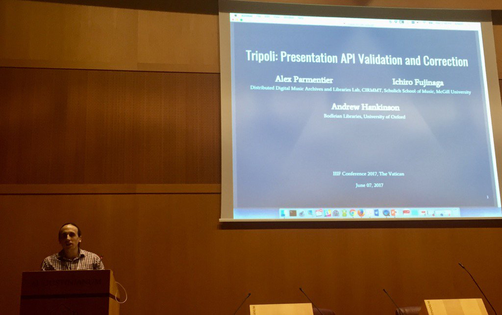
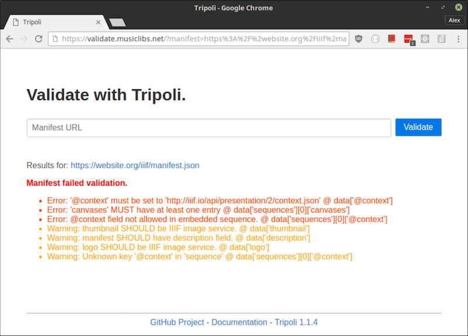

Tripoli at IIIF Conference in the Vatican
Posted by ehopkins on August 02, 2017
Alex Parmentier worked in the DDMAL Lab when he was a McGill undergrad, working on the ELVIS Database, Musiclibs, and more from 2015-17. He recently graduated from McGill, and now works for Amilia here in Montreal. This summer he visited the Vatican to present his research at the IIIF conference, and he’s taken the time to share his experience in a blog post for us. Thanks Alex!
In early June I traveled to the IIIF conference in the Vatican to present my work on Tripoli, a IIIF Presentation API validator and corrector.

The IIIF conference is a yearly gathering of developers and librarians who work with IIIF, a framework which, among other features, facilitates the publishing and consuming of archival quality images. IIIF allows libraries to make their high-quality image resources publicly available and affords a great deal of freedom to users to collect, manipulate, and display the images without incurring the costs of hosting the images themselves. This distributed hosting model is a key part of SIMSSA’s infrastructure, as we make images from around the world accessible in a single place, while still maintaining the relationship with the original collection.
Part of how this framework works is that those who wish to share a set images (for instance, scans of a manuscript) publish documents called manifests which describe where the images are located and how to access them over the internet. This manifest is the most basic unit of information transferal in the framework. Since these manifests are intended to be parsed automatically, it is essential that their structure conform to a set of rules laid out in the specification published in IIIF.
As we developed Musiclibs, it became clear that we needed a way to check the accuracy of manifests coming from different institutions before hosting them. Tripoli is a tool for automatically validating the structure of IIIF manifests and applying corrections to them. You could think of it as a spelling and grammar checker for these very particular documents. On top of providing this automatic validation, it also delivers a set of tools for extending the scope of validation and applying corrections in the course of validating.
 An example of validating in the browser.
This tool was presented in a 7 minute lightning talk on the main conference stage and in a 1 hour demo session. Response from the IIIF community was very positive, and many developers reported that they had already successfully made use of the tool, and others were interested in adopting it in the future. The presentation poster is available here.
More information about Tripoli and IIIF is available below: